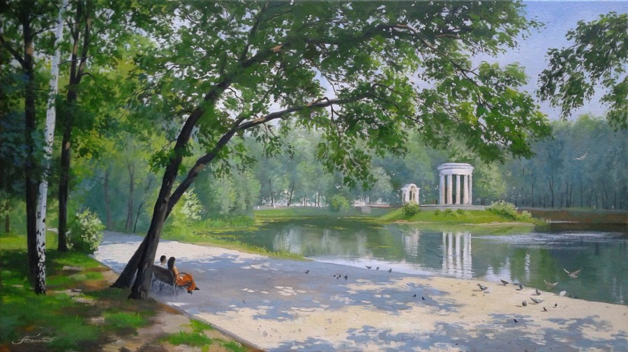

Лирика
Вокзальные часы… Застывшие минуты расставаний… На безымянной станции – блик юности моей. Мираж небес, пульсация теней, Волна динамиков подобна заклинанью, Стремящемуся возродить тебя из пустоты. Твои черты сейчас ли вспомню? В безвестность убегают провода И рельсы по эвклидову закону. Два вектора, два измеренья бытия, Лишь в бесконечности соединиться могут. Беззвучно стрелок ход стирает грань пространств, Событий, чувств меняя очертанья, И счастьем предстаёт тогда для нас Вновь испытать ушедшее страданье. Вокзальные часы – пустой перрон. Тот миг томительный уже не повториться. Однообразный пейзаж мелькает за окном, И жизнь по рельсам выложенным мчится.
Припомни тот день в «Оленьих ручьях», Капустниц лучистую стаю, Как над золочёной долиной застыл Поблёкший от времени ангел. Как мерно текли отражения скал, И небо мерцало на глади Реки, уносящей звенящую высь К подножию склонов дальних. И дольняя песня невидимых птиц Дрожала на иглах сосновых. Светились янтарь и берёзовый сок, Как светятся в храмах иконы. Как брошенный камень повис полосой, Лазурною, радужной нитью, Беззвучно соединившись с росой И с солнцем соединившись. На кронах растаял пустырь облаков, Стекая косыми тенями, Когда оживала гряда мотыльков, Прозрачная пенная стая. Беспечно взмывали они к небесам, Как блики, как вспышки, как искры … Лишь ангел стоял над сиянием скал, С земным не решаясь простится.
Подними завесу с зеркал, Пыль развеяв сквозь солнечный свет, И войди в опустевший зал, Где когда-то звучал менуэт. Сквозь игру отражений пройди, Отголосков и голосов. Полосою неузнанных лиц Льётся ток кристаллических нот. Эхо, вдаль уносящее хор, Хохот будто бы из хрусталя Обращаются в чадный аккорд, Что восходит из небытия. И возносится чёрной волной Череда содроганий, смертей, И сливается призрачный строй В ослепляющем танце теней. Звон осколков и вновь тишина… Неподвижно глядят зеркала. И опять опустевший зал В позаброшенном, старом ДК.
